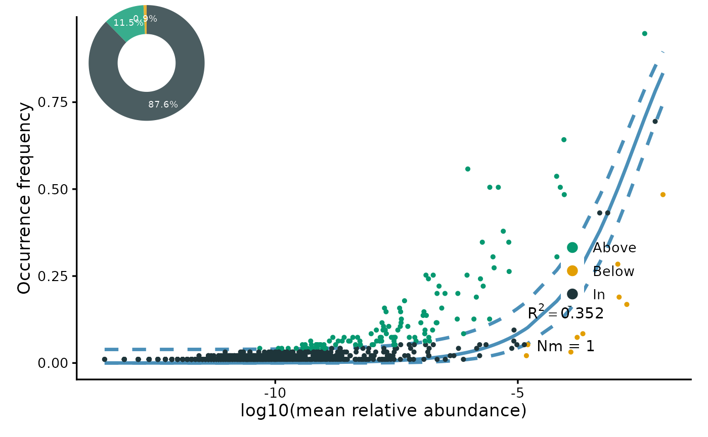

Perform a Sloan neutral model fit on the taxa in the current tidytacos object
Source:R/getters.R
perform_neutral_model.RdThis function executes the ncm function of the pctax package and returns the result.
Value
An object of class "ncm_res" (see pctax).
Examples
res <- urt %>%
filter_samples(method == "S", location == "NF") %>%
perform_neutral_model()
#> Warning: NaNs produced
#> Warning: NaNs produced
#> Warning: NaNs produced
#> Warning: NaNs produced
plot(res)
#> Scale for x is already present.
#> Adding another scale for x, which will replace the existing scale.
